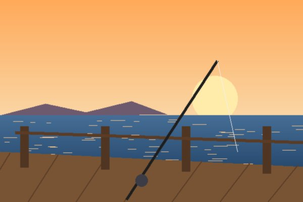
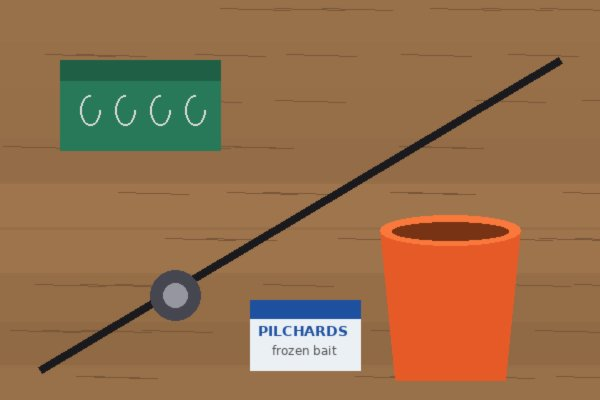
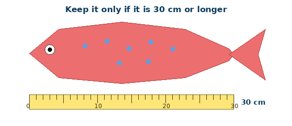

Fishing off a wharf is one of the best things to do in Auckland, and you don't need a boat. I started going when I was ten, and now I want to show you how. This page tells you what to bring, where to go and the rules you need to know.

You need a short rod with a reel, some hooks, sinkers and bait. Pilchards and squid make good bait, and you can buy them frozen at a bait shop. Bring a bucket, a towel, sunscreen and a drink too.

Lots of Auckland wharves are good for fishing, like Okahu Bay, Torpedo Bay in Devonport and Murrays Bay. Always go with an adult and stay back from the edge, especially when it is wet. Watch out for people casting near you.
Check the NZ Fishing Rules app before you go, because the rules can change.
